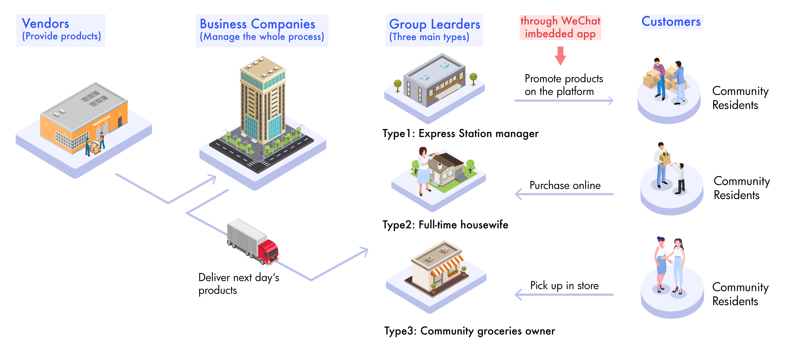
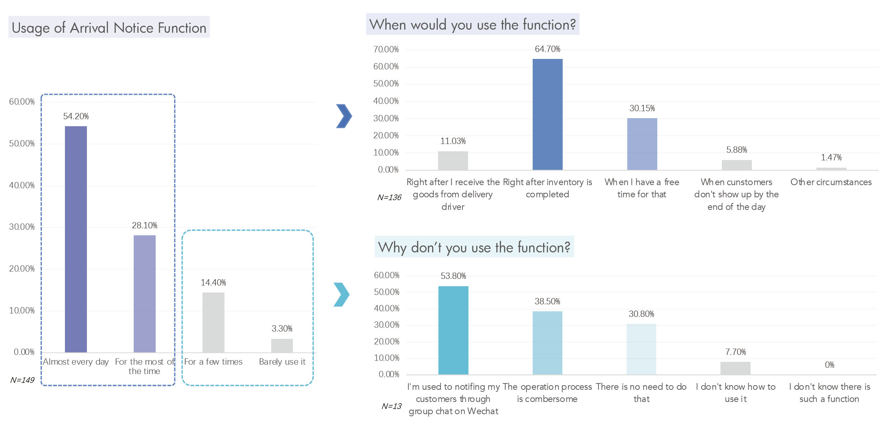
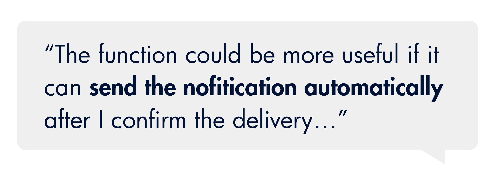
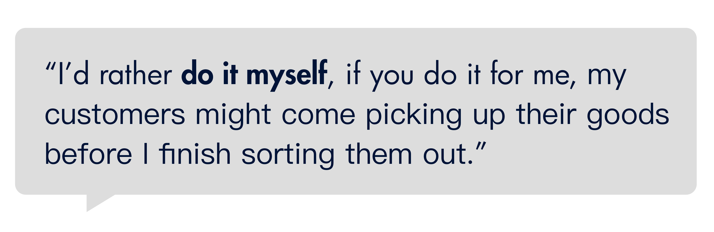
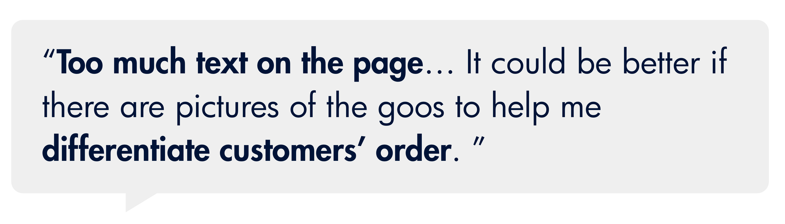

DiDi Select | Arrival Notice Flow Redesign
BACKGROUND
Stakeholders in the Group Purchasing Business Model
As a startup project of DiDi that is designed to allow a group of residents within the same community to buy daily necessities together with less face-to-face contact and lower prices, DiDi Select has an average of 1.07 million daily active group leaders. While employed, I focused on improving the user experience of the app on the group leader's side.
In the group purchase business, we seek a high turnover rate to keep fresh foods in a good condition.
Group leaders are the last node on this chain. In order to enable the group leaders to timely notify their customers after receiving the daily goods, we provide the Function of Arrival Notification on the app.
PROBLEM SCOPING
I noticed through business data that the original Arrival Notice feature need to be optimized:
1 Platform Loss
The after-sale rate of the products is 1.8%, among which 20% of the after-sale is caused by the damage of the products due to customers not picking up the goods in time, the value of the products in this part accounts for 0.36% of the GMV.
2 Low Function usage
According to daily usage data, only 34.92% of the group leaders who have daily records of confirming receipt will use the Arrival Notification function.
3 3 Costomer Complaints
Customers' negative reviews for the group leaders consisted 2.03% of the total reviews, among which negative reviews tagged "Unresponsive Notifications" accounts for 31.84% of the total, ranking the top 2 complaints.
USAGE DATA ANALYSIS & USER INTERVIEW
I dug into user habits through online questionnaires and user interview
According to the results of the questionnaire, 64.7% of the group leaders will send the arrival notice immediately after they finished the inventory. The main reasons for not using the function are their different habits in notifying their customers and the cumbersome operations process of the function.
I further gathered group leaders' feedback on this feature

How might we simplify the notification sending process and make the interface more friendly so that more group leaders would use it to notify their customers?

Pain Point 1
The Arrival Notice function only serves as an optional choice after group leaders confirmed the delivery.
 Insight 1
Group leaders decide when to send the notifications but could apply a more straightforward guide for them to use the feature.
Pain Point 2
Currently, the Arrival Notice page only provides Today's Orders, group leaders still have trouble contacting customers who didn't show up for days.
Insight 2
Expanding the range of notifications to customers in the last three days.
Pain Point 3
No enough visibility for group leaders to distinguish orders on the page.
Insight 3
Add some visual elements onto the page (pictures of goods, etc.